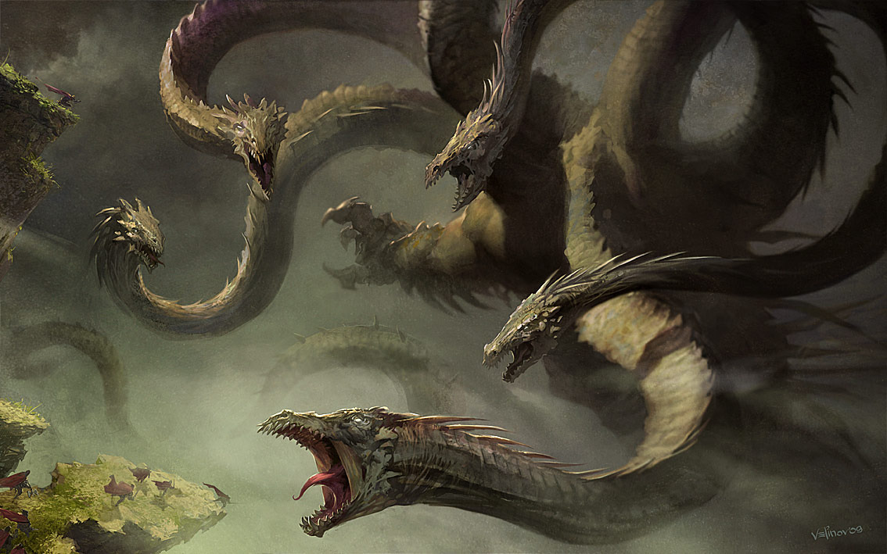

La Hidra de Lerna era una criatura muy parecida a una serpiente, pero esta bestia acuática poseía más cabezas y contaba con una respiración abruptamente venenosa que la hacía muy peligrosa,la bestia poseía ocho cabezas mortales y una novena en el centro que era inmortal, Y cuando era cortada una de sus cabezas, otras dos ocupaban su lugar,haciendo de esta bestia una de las mas dificiles de matar.

Hercules asesino a esta criatura,para acabar con el monstruo, sacó sus cabezas fuera del oscuro pantano y las orientó hacia la luz del sol, con los efectos de los rayos solares la hidra se debilitó, y fue entonces cuando Hércules percibió la mística cabeza inmortal de hidra, cortándola y dándole muerte.